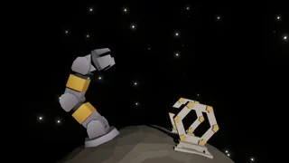
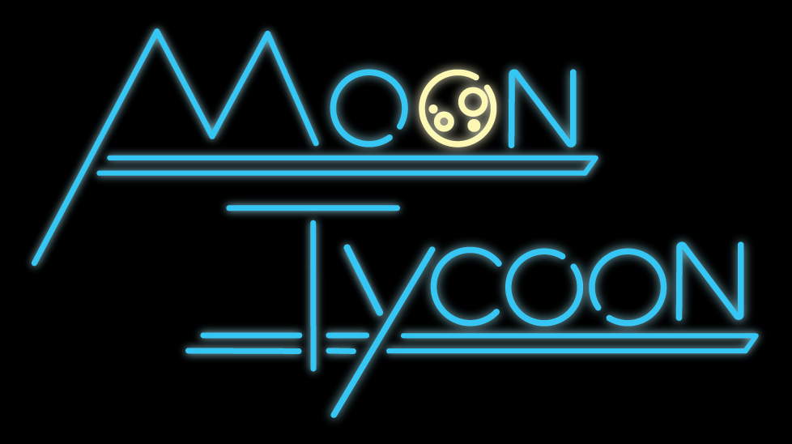

I direct a team of creatives to build a multiplayer virtual reality software designed to explore the possibilities of radio frequency technology in virtual spaces. RF Playground features RFID modeling and visualization, autonomous RFID robotics demonstrations, and various supply chain use-case demonstrations.
A demonstration of inverse kinematics (cyclic coordinate descent) and Unity's VFX graph.
A lunar surface simulation I worked on with several others during my internship at NASA. Moon Tycoon V2 is designed to demonstrate In-Situ Resource Utilization (ISRU) with various lunar technologies. Created for educational purposes with the potential for lunar site planning and astronaut training.
